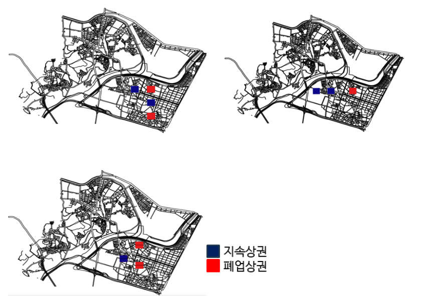

성수동 폐업·지속 상권의 정의와 매출 패턴 분석
상권의 지속 가능성을 높일 정책 방향을 찾기 위해, 폐업이 많고 창업이 적은 지역과 그 반대 특성의 지역을 비교했습니다. 업종별 창업률·폐업률과 매출 패턴으로 비교 집단을 정의하고, 매출 회귀·SHAP·변수 분포 분석으로 두 상권의 차이를 해석했습니다.
- 집단 설계: 격자·업종 선정 → 창업률·폐업률 → 매출 패턴 검토
- 분석: 집단별 매출 회귀·SHAP과 주요 변수 분포 비교

문제와 맥락
왜 폐업·지속 상권을 나눴는가
성수동이 관광객과 젊은 층을 끌어들이더라도, 모든 지역에서 상권이 안정적으로 유지되는 것은 아닙니다. 점포의 폐업은 빈 상가와 지역 경제 위축으로 이어질 수 있어, 상권이 형성되기 어려운 지역과 비교적 잘 형성된 지역의 차이를 구체적으로 살펴볼 필요가 있었습니다.
비교 대상을 정하는 과정에서도 폐업 분포를 먼저 분석했습니다. 폐업이 비교적 활발했던 요식/유흥을 중심으로 한식·외국 음식·카페를 선정하고, 각 업종의 창업·폐업 특성을 따로 반영했습니다.
팀은 개별 사업체의 생존·폐업 여부를 예측하는 접근에서 나아가, 상권 단위의 공간·인구·접근성 특성을 비교해 지역별 정책 방향을 제안하고자 했습니다. 이를 위해 ‘폐업 상권’과 ‘지속 가능한 상권’을 비교 집단으로 정의했습니다. 보고서에서 사용하는 명칭은 ‘지속 상권’이며, 상권은 같은 업종의 분석 대상 격자들을 묶은 집합입니다.
집단 정의를 먼저 설계한 뒤 두 집단의 매출 구조와 주요 변수의 차이를 분석했습니다. 회귀 모델의 예측 대상은 일별 매출이며, 폐업·지속 구분은 설명 변수와 비교 집단으로 활용했습니다.
수행 역할
이도현·탁승연·이희준의 팀 프로젝트에 참여해 데이터 전처리와 분석 코드를 작성했습니다. 프로젝트는 2024 성동구 빅데이터 펠로우십 우수상을 받았습니다.
접근 방법
1. 폐업 분포를 분석해 대상 업종 선정
분석 대상 업종은 데이터의 폐업 분포를 살펴 선정했습니다. 비교가 어려운 18개 세부 업종을 제외한 뒤, 52개 세부 업종을 요식/유흥·소매·서비스·자동차의 네 대분류로 정리했습니다. 서울시 상권분석 서비스와 성수동 고유 산업에 관한 자료도 업종 분류에 참고했습니다.
업장 운영 상태 데이터를 분석하니 요식/유흥에서 폐업이 비교적 활발하게 나타났습니다. 다른 대분류는 폐업이 없거나 특정 세부 업종에 사례가 집중돼, 대분류 전체의 폐업·지속 특성을 비교하기에 대표성이 부족했습니다. 이에 요식/유흥을 분석 범위로 좁히고 한식·외국 음식·카페를 최종 선정했습니다.
세 업종은 창업·폐업 분포도 달랐습니다. 한식은 두 비율이 대체로 낮은 반면, 카페는 창업률과 폐업률이 모두 높은 축에 있었습니다. 이 차이를 반영해 세 업종을 따로 분석하고, 각 업종의 평균을 기준으로 폐업·지속 후보를 정의했습니다.
2. 매출 비교가 가능한 공간 범위 선정
성수동을 250m × 250m 격자로 나누고, 매출·결제 건수·업장 운영 상태를 같은 공간 기준으로 정리했습니다. 처음의 60개 격자에서 폐업에 따른 매출 건수 변화가 나타나기 어려운 곳과 매출·결제 건수가 극도로 작은 곳을 제외해 45개 격자로 분석 범위를 좁혔습니다.
3. 창업률과 폐업률을 함께 사용한 1차 정의
폐업률만으로 구분하면 신규 진입과 폐업이 함께 많은 업종의 특성을 놓칠 수 있습니다. 한식은 창업률·폐업률이 대체로 낮고 카페는 두 비율이 모두 높은 특성이 있어, 업종별 평균을 기준으로 두 지표를 함께 비교했습니다.
| 구분 | 폐업률 | 창업률 |
|---|---|---|
| 폐업 후보 | 업종 평균보다 높음 | 업종 평균보다 낮음 |
| 지속 후보 | 업종 평균보다 낮음 | 업종 평균보다 높음 |
두 조건을 충족하지 않는 격자는 비교 대상에서 제외했습니다. 1차 후보는 한식 폐업 3·지속 2개, 외국 음식 폐업 3·지속 8개, 카페 폐업 3·지속 1개였습니다. 성수동 전체를 두 집단으로 양분하기보다, 비교 특성이 뚜렷한 대표 격자를 선정했습니다.
창업률·폐업률 기준과 최종 선정 격자 그림

4. 매출 패턴으로 후보를 재검토한 2차 선정
1차 후보를 대상으로 지속 후보의 매출이 폐업 후보보다 비교적 높은 패턴을 보이는지 검토했습니다. 이 조건을 반영해 한식은 폐업 2·지속 2개, 외국 음식은 폐업 1·지속 2개, 카페는 폐업 2·지속 1개 격자를 최종 선정했습니다. 같은 업종에서 선정된 폐업 격자와 지속 격자를 각각 묶어 비교 상권을 구성했습니다.
| 업종 |
1차 후보
폐업 / 지속 |
최종 선정
폐업 / 지속 |
|---|---|---|
| 한식 | 3 / 2 | 2 / 2 |
| 외국 음식 | 3 / 8 | 1 / 2 |
| 카페 | 3 / 1 | 2 / 1 |
5. 집단 차이와 검정의 가정 점검
선정 집단의 매출 차이를 살피기 전에 Kolmogorov–Smirnov 검정으로 정규성을, Levene 검정으로 등분산성을 점검했습니다. 정규성은 충족되지 않았고, 카페를 제외하면 등분산성도 충족되지 않아 독립 표본 t 검정과 Wilcoxon 순위합 검정을 함께 검토했습니다. 보고서 Table 3의 비교에서 지속 집단의 매출이 더 높았으며, 업종별 차이는 유의수준 0.05에서 유의했습니다.
6. 지역·시간별 자료를 매출 분석으로 연결
카드 매출, 연령·성별 유동인구, 업장 정보, 대중교통 접근성과 날씨를 격자·날짜 기준으로 결합했습니다. 2023년을 학습에, 2024년을 평가에 사용하고 입력 표준화는 학습 자료에 맞춘 변환을 평가 자료에도 적용했습니다. 매출은 log1p로 변환하고 원래 단위로 복원해 평가했습니다.
Random Forest·XGBoost·LightGBM을 비교하고, 업종별로 선정한 모델의 매출 예측을 SHAP으로 해석했습니다. 폐업·지속 집단의 평균 SHAP 차이와 주요 변수의 실제 분포를 함께 비교해, 예측 기여의 차이가 고객 연령·접근성·요일별 매출 패턴과 어떻게 연결되는지 분석했습니다.
적용 범위
지역별로 다른 개선 방향
유동인구가 많다는 사실만으로 매출이 높거나 상권이 지속된다고 해석하기 어려웠습니다. 고객 연령 구성, 외부 유입 의존성, 대중교통 접근성, 평일·주말 매출 패턴을 함께 살펴 지역별 개선 방향을 제안했습니다. 예를 들어 업무지구의 카페는 주말 매출이 발생하지 않는 패턴을 보여 기대 수익의 제약을 검토했고, 학교 주변·뚝도시장·아뜰리에길에는 각각의 공간 특성에 맞춘 접근성·보행 환경 등의 정책 방향을 제안했습니다.
선정 기준과 분석 결과를 해석하는 범위
두 집단은 창업·폐업 특성과 매출 패턴을 고려해 선정한 사례입니다. 매출 차이가 2차 선정 기준에도 포함돼 있으므로, 이후 매출 차이 검정은 선정과 독립적인 일반화 검증으로 해석할 수 없습니다. SHAP은 매출 예측 모델의 기여를 설명하며 폐업 원인의 인과 효과를 입증하지 않습니다.
분석 범위는 선정 상권의 매출 구조와 집단 차이, 이에 근거한 정책 제안입니다. 모든 성수동 지역의 미래 폐업 확률이나 실제 정책 시행 효과를 평가한 결과는 아닙니다.